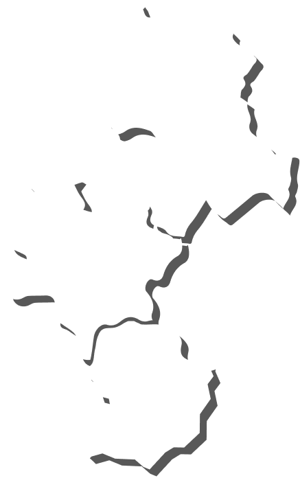

2022-10
세계유산과 함께하는 부여를 누리다-행사일시:20...
2022-10
세계유산 백제 아카데미 시범 운영-세계유산 백제...
2022-10
2022 백제역사유적지구 국제학술포럼 개최(재)백...
2022-10
ㅇ (재)백제세계유산센터(이하 &lsquo센터&rsquo)는...
2022-10
재단법인 백제세계유산센터는 오는 24일 재단 출범 10...
2022-11-18 08:55
2022-11-17 10:51
2022-11-16 08:48